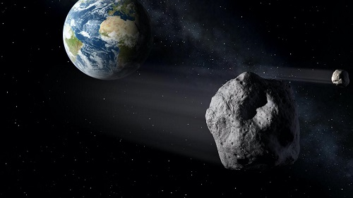

Tres asteroides de mas de 30 metros pasaran muy cerca de la tierra esta semana
De acuerdo con reportes de la NASA,tres asteroides se aproximarán a la Tierra durante esta semana de los
cuales, dos de ellos alcanzarán el punto más cercano al planeta el mismo día.
Expertos de la NASA advierten que ninguno de estos asteroides representan algún peligro para la
vida
en el planeta, a pesar de la corta distancia a la que se encontrarán.

¿Qué pasa si un asteroide choca contra la Tierra?
Las consecuencias de que un asteroide impacte en la Tierra variarían dependiendo del tamaño del mismo,así
como
su velocidad e inclinación al momento de chocar con el planeta.
Por ejemplo, un asteroide de 100 metros de diámetro que choque con la Tierra a una velocidad de 40 km/s y
un
ángulo de 80º, generaría un cráter de 3 kilómetros de diámetro y una explosión de 300 megatones.
Asimismo,
provocaría destrucción total en un radio de 20 km y destrucción severa en un radio de 40-50 km, además
de
generar terremotos en un radio de 60 km. Sin embargo, la probabilidad de que esto ocurra es de una vez
cada
9,000 años.
Volver